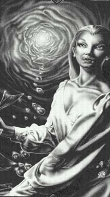

Виалла(Королева) 5'1 ", тонкая талия , брюнетка, прекрасно выглядит и мягко говорит. Королева так много делает для того, чтобы умерить пыл короля, что, вероятнее всего, ответственность за его внезапную и драматическую зрелость лежит на ней. Она спокойно относиться к событиям в Янтаре, предпочитая вместо интриг полностью поддерживать действия Рэндома. Она определенно любит своего мужа, и, ко всеобщему удивлению, муж любит ее столь же сильно Виалла слепа, и она - скульптор. Ее произведения восхищают простотой, которая выдает величайшее внимание автора к деталям, и этим противоречием, кажется, Виалла достигает уникального художественного воздействия. Через спокойствие своего искусства и через спокойствие своей личности Виалла без посторонней помощи, но косвенно изменят атмосферу замка Амбера. Врагов у нее нет. Жена Рэндома, она - слепой скульптор, на которой он должен был жениться в Ребме, но с тех пор влюбился в нее. Она - хороший врач. Имеет странные способности, несмотря на невозможность использования ею карт. |
 |